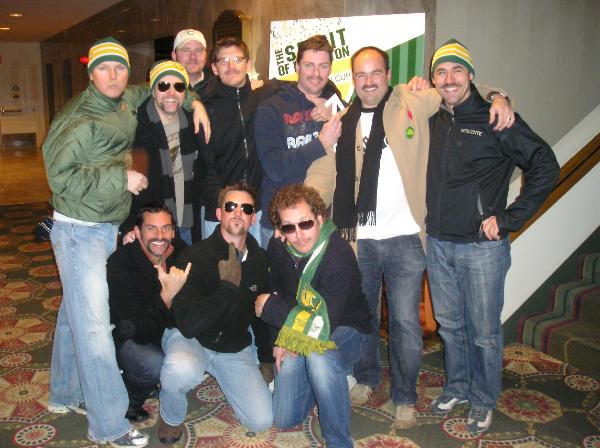

Previous Summits
Summit 2002 - Banff
Summit 2003 - Lake TahoeSummit 2004 - Vancouver
Summit 2005 - Waikiki
Summit 2006 - Calgary
Summit 2007 - Chicago
Summit 2008 - Montreal
Summit 2009 - Louisville
Summit 2010 - Shuswap Lake
Summit 2011 - San Diego, CA
Summit 2012 - Slaying Sturgeon – BC Canada
Summit 2013 - Denver, CO

The North American Summit 2007 was based in Chicago, Illinois.
This Summit doubled as a Bachelor Party for US Delegate Whiteguy. This
summit was the rookie year for Brad Wise. In true summit fashion, we took
the town by storm. From Cubs game to motorboats, Chicago did not know
what hit it.


The North American Summit 2007 was based in Montreal, Quebec.
This Summit was headlined by the Grey Cup. This summit was the rookie
year for Paul Witkiewitz. The Spirit of Edmonton, Grey Cup Village and many
sports bars along the way held their own against the men of the summit.
This summit claimed many livers....